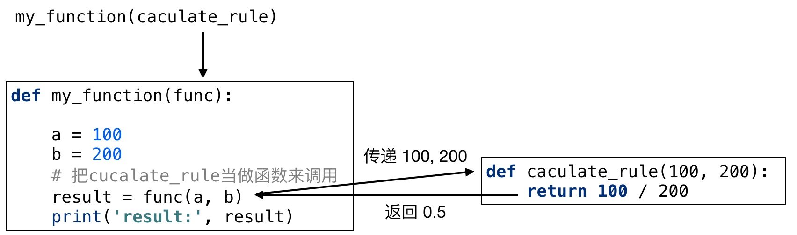

1. 匿名函数
大家来思考一个问题:
def my_add(a, b):
return a + b
my_add()
my_add 函数需要2行定义, 能不能简化一下定义方式, 一行搞定! 当然可以， 我们可以把这种函数写成一个 匿名函数.
- 匿名函数的概念
- 匿名函数语法格式
- 匿名函数和普通函数的区别
- 匿名函数的使用场景
1.1 语法格式
定义的函数没有名字,这样的函数叫做匿名函数.
我们先看下匿名函数的语法结构:
lambda [形参1], [形参2], ... : [单行表达式] 或 [函数调用]
使用匿名函数, 上面的函数我们就可以定义为单行的函数.
# 不带参数
my_fun = lambda : 10 + 20
# 带参数
my_add = lambda a, b: a + b
my_add()
1.2 和普通函数的区别
def my_function(start, end):
my_sum = 0
while start <= end:
my_sum += start
start += 1
return my_sum
- 匿名函数中不能使用 if 语句、while 循环、for 循环, 只能编写单行的表达式，或函数调用, 普通函数都可以.
- 匿名函数中返回结果不需要使用 return, 表达式的运行结果就是返回结果, 普通函数返回结果必须 return.
- 匿名函数中也可以不返回结果. 例如:
lambda : print('hello world')
1.3 应用场景
1.3.1 定义简单的单行函数
def my_function(a, b):
return a + b
使用 lambda 定义格式如下:
my_function = lambda a, b: a + b
1.3.2 作为函数的参数进行传递(重点、难点)
1.3.2.1 为什么函数要作为另外函数的参数?
def my_function1():
a = 100
b = 200
result = a + b
print('result:', result)
def my_function2():
a = 100
b = 200
result = a - b
print('result:', result)
def my_function3():
a = 100
b = 200
result = a * b
print('result:', result)
上面函数定义的缺点是:
- 函数名要定义多个, 使用起来不方便. 需要记忆, 那个函数完成什么事情.
- 上面函数只定义了三种计算方式: a + b、a -b、a * b, 如果用户希望 a 和 b 进行除法运算, 那么显然还需要再写函数.
解决目标: 1、提高函数的通用性 2、减少代码量
可以通过传递给 my_function 一个函数来完成.
def my_function(func):
a = 100
b = 200
# 把 cucalate_rule 当做函数来调用
result = func(a, b)
print('result:', result)
def caculate_rule(a, b):
return a / b
my_function(caculate_rule)

1.3.2.2. 匿名函数做为函数参数
def my_function(func):
a = 100
b = 200
# 把 cucalate_rule 当做函数来调用
result = func(a, b)
print('result:', result)
def caculate_rule1(a, b):
return a / b
def caculate_rule2(a, b):
return a // b
def caculate_rule3(a, b):
return a % b
my_function(caculate_rule1)
my_function(caculate_rule2)
my_function(caculate_rule3)
我们为了调用 my_function 函数要写很多规则, 整个文件中可能就有很多定义的函数代码, 问题是:
- 这些函数只会用一次
- 这些函数也比较简单
就没有必要 py 文件中出现这么多无用的代码. 如何改进:
def my_function(func):
a = 100
b = 200
# 把 cucalate_rule 当做函数来调用
result = func(a, b)
print('result:', result)
my_function(lambda a, b: a / b)
my_function(lambda a, b: a // b)
my_function(lambda a, b: a % b)
1.3.2.3. 总结
- 函数可以做为参数传递给另外一个函数, 可以使得函数的实现更加通用.
- 匿名函数也可以作为参数传递给另外一个函数, 对于只需要用到一次函数, 可以通过匿名函数减少代码量.